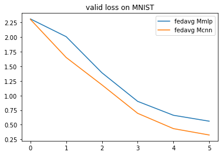
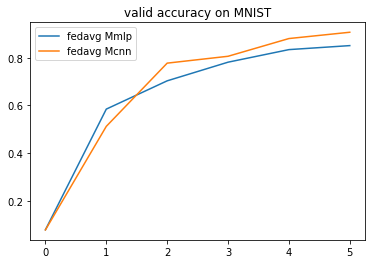
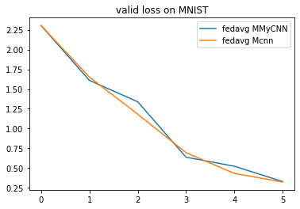
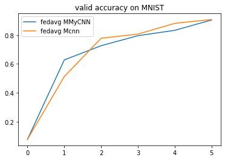
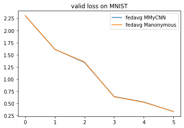
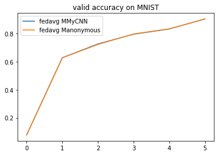

1.5 Model Configuration
This section introduces how to change the model. Far now, we only train the default model for each benchmark (e.g. CNN for mnist_classification). For most of the benchmarks, we have provided several popular models that can be easily used by replacing the parameter model in flgo.init. We show the usage by the following example.
1.5.1 Example: Select model for MNIST
import flgo.benchmark.mnist_classification.model.cnn as cnn
import flgo.benchmark.mnist_classification.model.mlp as mlp
import flgo.algorithm.fedavg as fedavg
task = './mnist_iid' # this task has been generated in Example 2.1
cnn_runner = flgo.init(task, fedavg, option={'num_rounds':5, 'num_epochs':1, 'gpu':0}, model=cnn)
mlp_runner = flgo.init(task, fedavg, option={'num_rounds':5, 'num_epochs':1, 'gpu':0}, model=mlp)
cnn_runner.run()
mlp_runner.run()
# result analysis
import flgo.experiment.analyzer
analysis_plan = {
'Selector':{
'task': task,
'header':['fedavg'],
'filter':{'M':['cnn', 'mlp'], 'R':5}, # filter the result by the communication round R=5
'legend_with':['M']
},
'Painter':{
'Curve':[
{'args':{'x': 'communication_round', 'y':'val_loss'}, 'fig_option':{'title':'valid loss on MNIST'}},
{'args':{'x': 'communication_round', 'y':'val_accuracy'}, 'fig_option':{'title':'valid accuracy on MNIST'}},
]
}
}
flgo.experiment.analyzer.show(analysis_plan)


1.5.2 Customization on models
We now discuss the impletementation of models in our framework. Different from the centralized ML setting where there is only a model that transform the input to the output, the model in our framework should describe what and how the models are kept by different participants. This is because different parties in FL may have models with different architectures and paramters (e.g. personzalized FL, vertical FL, model-agnostic FL). In addition, the model sometimes could also be a significant part of particular methods. Therefore, we define the model as a class as follows:
class GeneralModel:
@classmethod
def init_local_module(cls, object):
"""init local models (e.g. personal models that cannot be shared) for the object according to its information"""
pass
@classmethod
def init_global_module(cls, object):
"""init global models (e.g. sharable models) for the object according to its information"""
pass
Now we construct a model and test it as the example.
from torch import nn
import torch.nn.functional as F
from flgo.utils.fmodule import FModule
class CNNModel(FModule): # inherit from flgo.utils.fmodule.FModule instead of torch.nn.Module
def __init__(self):
super().__init__()
self.conv1 = nn.Conv2d(in_channels=1, out_channels=32, kernel_size=5, padding=2)
self.conv2 = nn.Conv2d(in_channels=32, out_channels=64, kernel_size=5, padding=2)
self.fc1 = nn.Linear(3136, 512)
self.fc2 = nn.Linear(512, 10)
def forward(self, x):
x = x.view((x.shape[0],28,28))
x = x.unsqueeze(1)
x = F.max_pool2d(F.relu(self.conv1(x)), 2)
x = F.max_pool2d(F.relu(self.conv2(x)), 2)
x = x.view(-1, x.shape[1]*x.shape[2]*x.shape[3])
x = F.relu(self.fc1(x))
x = self.fc2(x)
return x
def init_local_module(object):
pass
def init_global_module(object):
# In classical horizontal FL, only the server needs to trace the latest global and store it
if 'Server' in object.get_classname():
object.model = CNNModel().to(object.device)
class MyCNN:
init_local_module = init_local_module
init_global_module = init_global_module
mycnn_runner = flgo.init(task, fedavg, option={'num_rounds':5, 'num_epochs':1, 'gpu':0}, model=MyCNN)
mycnn_runner.run()
analysis_plan = {
'Selector':{
'task': task,
'header':['fedavg'],
'filter':{'M':['MyCNN', 'cnn'], 'R':5},
'legend_with':['M']
},
'Painter':{
'Curve':[
{'args':{'x': 'communication_round', 'y':'val_loss'}, 'fig_option':{'title':'valid loss on MNIST'}},
{'args':{'x': 'communication_round', 'y':'val_accuracy'}, 'fig_option':{'title':'valid accuracy on MNIST'}},
]
}
}
flgo.experiment.analyzer.show(analysis_plan)


The two CNNs of the same architecture has a similar performance in this example.
1.5.3 What is FModule?
FModule is a class that decorates the class torch.nn.Module to enable direct operations on models like add, sub. FModule directly inherits from torch.nn.Module and won't have any impact on its original characteristics. The only difference lies in that FModule allows the model-level operations by using operators +,-,* to obtain a new model. We show the usage of FModule by the following example.
1.5.3.1 Example: Model-level operators
from torch import nn
import torch.nn.functional as F
from flgo.utils.fmodule import FModule
class Model(FModule):
def __init__(self):
super().__init__()
self.fc = nn.Linear(3, 3, bias=False)
def forward(self, x):
return x
A = Model()
B = Model()
print("model A: ", A.fc.weight)
print("model B: ", B.fc.weight)
# add
C = A+B # C is a new instance of class Model and changes on C won't have any impact on A or B
print("C=A+B: {}", C.fc.weight)
print("Type of C:",C)
model A: Parameter containing:
tensor([[ 0.2429, -0.4990, 0.1843],
[-0.2553, 0.1664, 0.3536],
[ 0.5772, 0.0578, -0.0694]], requires_grad=True)
model B: Parameter containing:
tensor([[-0.4220, -0.3707, -0.2508],
[-0.4888, -0.1267, 0.1310],
[ 0.5714, -0.2370, 0.3410]], requires_grad=True)
C=A+B: {} Parameter containing:
tensor([[-0.1790, -0.8697, -0.0665],
[-0.7441, 0.0397, 0.4845],
[ 1.1486, -0.1792, 0.2716]], requires_grad=True)
Type of C: Model(
(fc): Linear(in_features=3, out_features=3, bias=False)
)
# sub
print('A-B: \n', (A-B).fc.weight)
print('+++++++++++++++++++++++++++++++++++')
# scale
print('2*A: \n', (2*A).fc.weight)
print('+++++++++++++++++++++++++++++++++++')
# div
print('A/2: \n', (A/2).fc.weight)
print('+++++++++++++++++++++++++++++++++++')
# norm
print('||A||_2: \n', (A**2))
print('+++++++++++++++++++++++++++++++++++')
# neg
print('-A: \n', (-A).fc.weight)
print('+++++++++++++++++++++++++++++++++++')
# zeros-copy
print('A.zeros_like(): \n',A.zeros_like().fc.weight)
print('+++++++++++++++++++++++++++++++++++')
# dot
print("dot(A,B):\n", A.dot(B))
print('+++++++++++++++++++++++++++++++++++')
# cos-similarity
print("cos_sim(A,B):\n", A.cos_sim(B))
print('+++++++++++++++++++++++++++++++++++')
# size
print("size(A):\n", A.count_parameters())
print('+++++++++++++++++++++++++++++++++++')
A-B:
Parameter containing:
tensor([[ 0.6649, -0.1282, 0.4352],
[ 0.2336, 0.2932, 0.2226],
[ 0.0057, 0.2948, -0.4103]], requires_grad=True)
+++++++++++++++++++++++++++++++++++
2*A:
Parameter containing:
tensor([[ 0.4859, -0.9979, 0.3687],
[-0.5105, 0.3329, 0.7072],
[ 1.1543, 0.1156, -0.1388]], requires_grad=True)
+++++++++++++++++++++++++++++++++++
A/2:
Parameter containing:
tensor([[ 0.1215, -0.2495, 0.0922],
[-0.1276, 0.0832, 0.1768],
[ 0.2886, 0.0289, -0.0347]], requires_grad=True)
+++++++++++++++++++++++++++++++++++
||A||_2:
tensor(0.9493)
+++++++++++++++++++++++++++++++++++
-A:
Parameter containing:
tensor([[-0.2429, 0.4990, -0.1843],
[ 0.2553, -0.1664, -0.3536],
[-0.5772, -0.0578, 0.0694]], requires_grad=True)
+++++++++++++++++++++++++++++++++++
A.zeros_like():
Parameter containing:
tensor([[0., -0., 0.],
[-0., 0., 0.],
[0., 0., -0.]], requires_grad=True)
+++++++++++++++++++++++++++++++++++
dot(A,B):
tensor(0.4787)
+++++++++++++++++++++++++++++++++++
cos_sim(A,B):
tensor(0.4703)
+++++++++++++++++++++++++++++++++++
size(A):
9
+++++++++++++++++++++++++++++++++++
Besides the model-level operators, we also implement some common functions on model-level.
import flgo.utils.fmodule as ff
# exp(A)
print('exp(A):\n', ff.exp(A).fc.weight)
print('+++++++++++++++++++++++++++++++++++')
# log(A)
print('log(A):\n', ff.log(A).fc.weight)
print('+++++++++++++++++++++++++++++++++++')
# model to 1-D vector
a = ff._model_to_tensor(A)
print('a = Vec(A):\n', a)
# 1-D tensor to model
print('A from a: \n',ff._model_from_tensor(a, A.__class__).fc.weight)
print('+++++++++++++++++++++++++++++++++++')
# model averaging
print('AVERAGE([A,B]):\n', ff._model_average([A,B]).fc.weight)
# model sum
print('SUM([A,B]):\n', ff._model_sum([A,B]).fc.weight)
exp(A):
Parameter containing:
tensor([[1.2750, 0.6072, 1.2024],
[0.7747, 1.1811, 1.4242],
[1.7810, 1.0595, 0.9330]], requires_grad=True)
+++++++++++++++++++++++++++++++++++
log(A):
Parameter containing:
tensor([[-1.4149, nan, -1.6910],
[ nan, -1.7931, -1.0396],
[-0.5496, -2.8510, nan]], requires_grad=True)
+++++++++++++++++++++++++++++++++++
a = Vec(A):
tensor([ 0.2429, -0.4990, 0.1843, -0.2553, 0.1664, 0.3536, 0.5772, 0.0578,
-0.0694])
A from a:
Parameter containing:
tensor([[ 0.2429, -0.4990, 0.1843],
[-0.2553, 0.1664, 0.3536],
[ 0.5772, 0.0578, -0.0694]], requires_grad=True)
+++++++++++++++++++++++++++++++++++
AVERAGE([A,B]):
Parameter containing:
tensor([[-0.0895, -0.4348, -0.0333],
[-0.3721, 0.0199, 0.2423],
[ 0.5743, -0.0896, 0.1358]], requires_grad=True)
SUM([A,B]):
Parameter containing:
tensor([[-0.1790, -0.8697, -0.0665],
[-0.7441, 0.0397, 0.4845],
[ 1.1486, -0.1792, 0.2716]], requires_grad=True)
1.5.4 Fast Customization
We further provide fast API to convert a model into federated one by writing only one line code
from torch import nn
import torch.nn.functional as F
class NewModel(nn.Module):
def __init__(self):
super().__init__()
self.conv1 = nn.Conv2d(in_channels=1, out_channels=32, kernel_size=5, padding=2)
self.conv2 = nn.Conv2d(in_channels=32, out_channels=64, kernel_size=5, padding=2)
self.fc1 = nn.Linear(3136, 512)
self.fc2 = nn.Linear(512, 10)
def forward(self, x):
x = x.view((x.shape[0],28,28))
x = x.unsqueeze(1)
x = F.max_pool2d(F.relu(self.conv1(x)), 2)
x = F.max_pool2d(F.relu(self.conv2(x)), 2)
x = x.view(-1, x.shape[1]*x.shape[2]*x.shape[3])
x = F.relu(self.fc1(x))
x = self.fc2(x)
return x
model = flgo.convert_model(NewModel) # the default value of model_name is 'anonymous'
mycnn_runner2 = flgo.init(task, fedavg, option={'num_rounds':5, 'num_epochs':1, 'gpu':0}, model=model)
mycnn_runner2.run()
analysis_plan = {
'Selector':{
'task': task,
'header':['fedavg'],
'filter':{'M':['MyCNN', 'anonymous'], 'R':5},
'legend_with':['M']
},
'Painter':{
'Curve':[
{'args':{'x': 'communication_round', 'y':'val_loss'}, 'fig_option':{'title':'valid loss on MNIST'}},
{'args':{'x': 'communication_round', 'y':'val_accuracy'}, 'fig_option':{'title':'valid accuracy on MNIST'}},
]
}
}
flgo.experiment.analyzer.show(analysis_plan)

